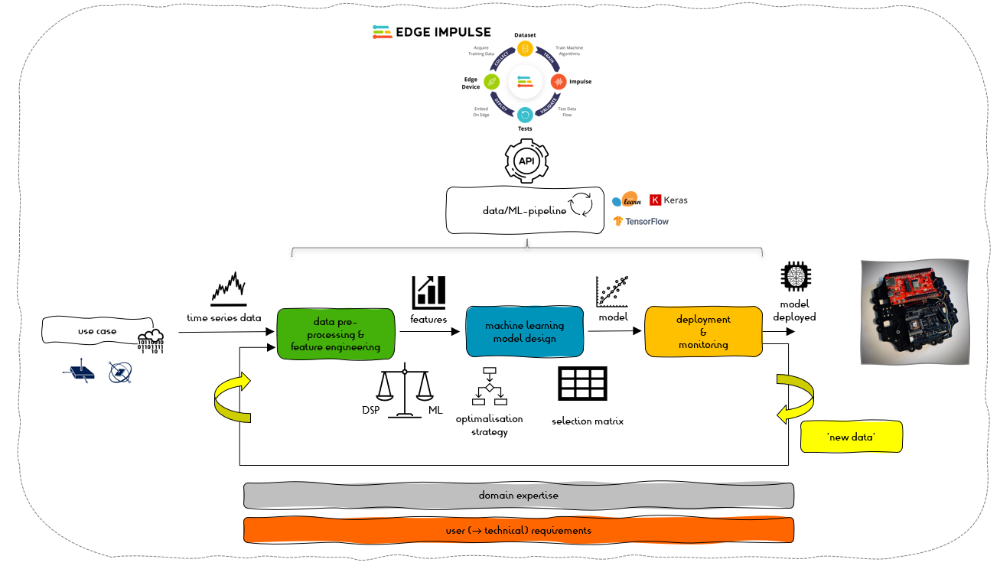

Machine Learning @ the Extreme Edge
One of the challenges today is real-time and energy-efficient information extraction and processing at the edge by using Artificial Intelligence. However, there is a recent trend to implement machine learning on end-point devices. These end-point devices are located on the extreme edge, the border between the analog (physical world) and the digital world. It consists of one or more sensors and a resource-constrained embedded device, a device with a limited amount of memory, computing power and power consumption. Today's challenge is to develop accurate, energy-efficient machine learning models that can be deployed on these end-point devices.

Machine Learning at the Extreme Edge (ML@E2dge) looks at how a developer can apply machine learning in the development of accurate, energy-efficient, and intelligent (wireless) (battery-powered) end-point devices and systems. Starting from a case study, a machine learning model is developed, optimized and deployed. In the project, we limit ourselves to a supervised machine learning regression problem. The selected end-point device is a Cortex®-M4 ARM® microcontroller (nRF52840, Nordic Semiconductor), in combination with an Inertial Measurement Unit (IMU) sensor (MTi-3, Xsens). In the project open-source software frameworks such as scikit-learn, TensorFlow and Keras are used, in combination with Edge Impulse Studio. For the experiment, metrics and version tracking, MLOps (Machine Learning Operations) frameworks such as mlflow and Weights and Biases are explored.
The outcome of the project is a guideline, a workflow, (software) tools, that developers can use and apply in the design of the next generation of embedded intelligent end-point devices and systems.